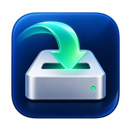

NTFS 畅写 · 产品介绍
36 秒介绍片 · 真实录屏
0.1.1 预览版 · Apple Silicon · macOS 26 及以上 · 界面简体中文 · 免费开源（GPL-2.0）
片中操作为真实录屏：演示卷是本轮新建的 NTFS 磁盘镜像；演示机已提前安装并完成系统授权，不代表全新 Mac 首次安装流程。等待过程已加速并在画面中标注。
Windows 交叉读写与检查、异常拔插 / 掉电 / 睡眠唤醒、长期压力、多用户与多分区物理盘等尚未覆盖，详见仓库的已知问题与发布门禁。
片中 Paragon 价格于 2026-10-25 在其官网核验（家庭用途单席、一次性付款）；地区、税费及后续变化以官网结算为准，两者功能与服务范围不同。
片中操作为真实录屏：演示卷是本轮新建的 NTFS 磁盘镜像；演示机已提前安装并完成系统授权，不代表全新 Mac 首次安装流程。等待过程已加速并在画面中标注。
Windows 交叉读写与检查、异常拔插 / 掉电 / 睡眠唤醒、长期压力、多用户与多分区物理盘等尚未覆盖，详见仓库的已知问题与发布门禁。
片中 Paragon 价格于 2026-10-25 在其官网核验（家庭用途单席、一次性付款）；地区、税费及后续变化以官网结算为准，两者功能与服务范围不同。
配乐为原创，采样署名：Salamander Grand Piano V3 by Alexander Holm（CC BY 3.0）、Versilian Studios VSCO 2 CE、FreePats、Karoryfer Samples（CC0）。字体：Noto Sans SC、Inter、JetBrains Mono（SIL OFL 1.1）。
English: NTFS WriteFlow product video — a 36-second cut (music, no narration). Real screen recordings of read-only mount, read-write mount, Finder file operations, remount re-read and safe whole-disk eject on a freshly created NTFS disk image. Preview 0.1.1 for Apple Silicon, macOS 26+; the app UI is Simplified Chinese.